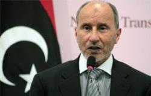

|
|

ممنوعيت چند همسری در ليبی لغو میشود
دو شنبه2 آبان 1390
رادیو زمانه: مصطفی عبدالجليل، رئيس شورای ملی انتقالی ليبی گفت: "شريعت اسلامی، بنيان و اساس قانون اساسی در ليبی جديد خواهد بود." وی همچنين از لغو ممنوعيت چندهمسری در ليبی خبر داد.
در زمان حکومت سرهنگ معمر قذافی، رهبر پیشین لیبی، قانون تکهمسری در این کشور رواج داشت.
به گزارش رويترز، عبدالجليل روز يکشنبه اول آبان ۱۳۹۰ در مراسم اعلام "آزادی ليبی" گفت: " کشور ما يک کشور اسلامی است. ما شريعت اسلام را به عنوان پايه و اساس قانونگزاری انتخاب کردهايم و هر قانونی که مغاير با اصول شريعت اسلامی باشد، رد خواهد شد."
وی همچين از حذف سود بانکی و اجرای بانکداری اسلامی خبر داد.
اين مراسم در ميدان "الکيش" شهر بنغازی و با حضور فرماندهان نظامی و سياسی اين شورا و هزاران نفر از مردم اين کشور برگزار شد.